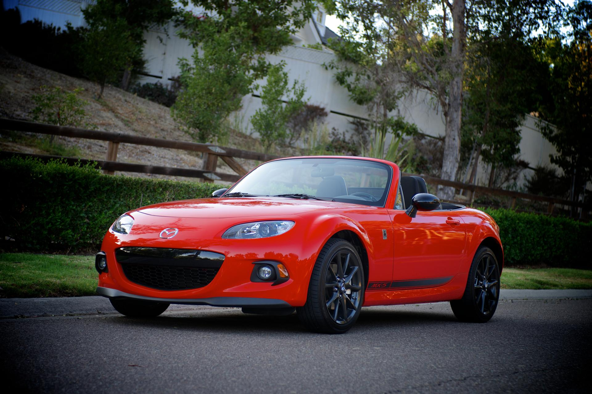
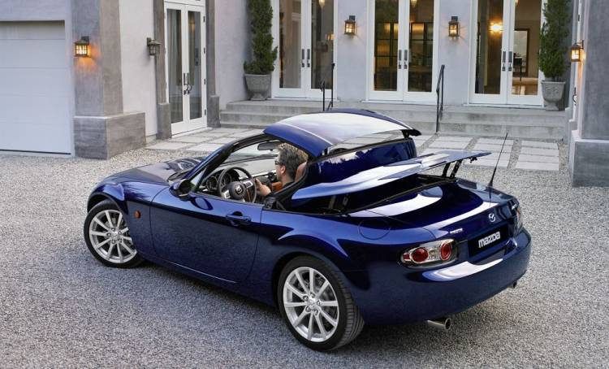
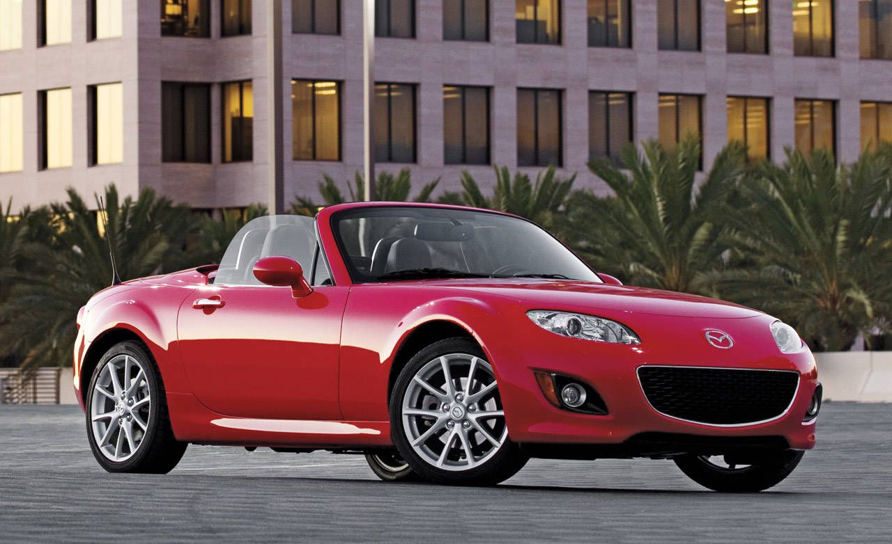

NC (2005-2015)
El MX-5 NC (También conocido como MK3) salio a la venta en 2005. Motorizaciones: 1.8L 126cv 2.0L 160cv Versiones: NC1 (2005-2009) NC2 (2009-2013) NC3 (2013-2015) Llegamos a la tercera generación, al actual (por poco tiempo) Miata. Una tercera generación donde se produjo un considerable salto generacional , sobre todo si tenemos en cuenta el tímido paso entre el Na y el Nb. Gana dimensiones, gana presencia, los pasos de rueda se convierten en uno de los puntos más destacados de su diseño y se mantienen lazos en elementos como el paragolpes delantero o la zaga. Su interior en cambio parece dispuesto a volver a la primera generación. De las curvas de las últimas unidades del Na y del Nb a un salpicadero recto con una línea frontal que inevitablemente nos recuerda al Na.1 / 3

2 / 3

3 / 3

En 2013 se volvía a aplicar una nueva actualización, en esta ocasión con cambios mucho menores. Se mejoraba la frenada y se introducía una respuesta más precisa del acelerador, pequeños matices estéticos en su frontal y un capó activo listo para ofrecer una mayor protección a los peatones en caso de atropello.En esta generación se introduce junto a la capota de lona clásica una variante de techo duro retráctil, de mecanismo automático, que recibe la denominación de Roadster Coupé, RC.
Coloquialmente, el MX-5 original es "techolona" y el RC es "techolata".En esta generación merece la pena destacar versiones como el Mazda MX-5 Super25, con jaula antivuelco, faros de competición sobre el capó, un interior aligerado, un volante de competición y el asiento tipo backet, llantas Volk y cambios en la ECU y sistema de escape; el MX-5 GT, con 205 caballos, escape central, un alerón tipo lip en la zaga y un splitter frontal o el MX-5 Yusho, equipado con un compresor, consiguiendo una potencia de 241 caballos.